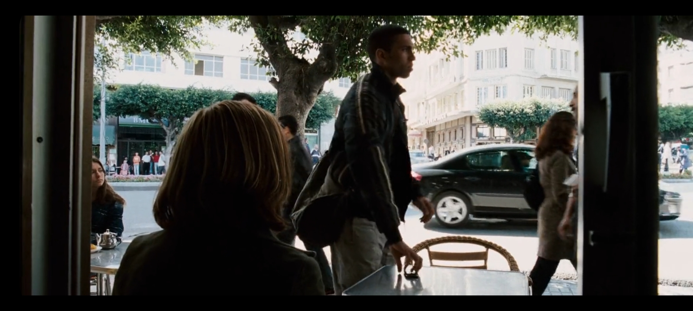
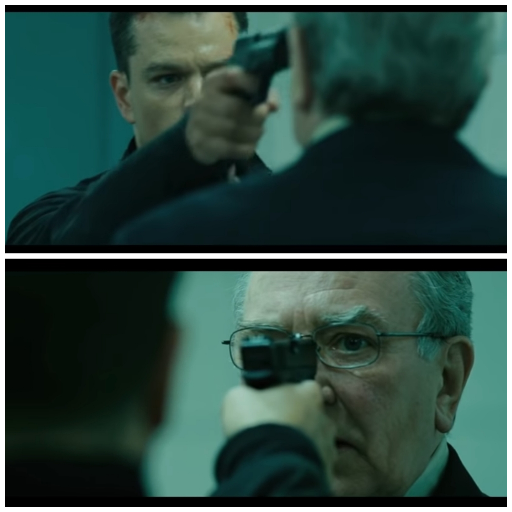
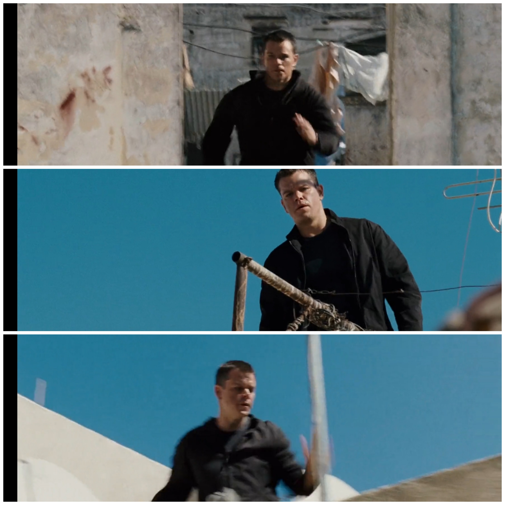

Gran Cafe de Paris

Nicky exchanges cell phones with hitman Desh at the Gran Cafe de Paris in Tangier, Morocco. The real life cafe was a popular meeting spot for spies when Tangier was an international city.
-
Gun ChangeWhen Bourne is talking to Hirsch, the gun he is holding changes from a Sig in the shots facing Bourne, to a Glock when the shots face Hirsch.
-
Jacket ZipperIn the chase scene involving Bourne and Desh, when Bourne runs through the rooftops, his jacket is zipped. When he comes to a stop(to look for Nicky), his jacket is open. As he begins to run again, his jacket is zipped.